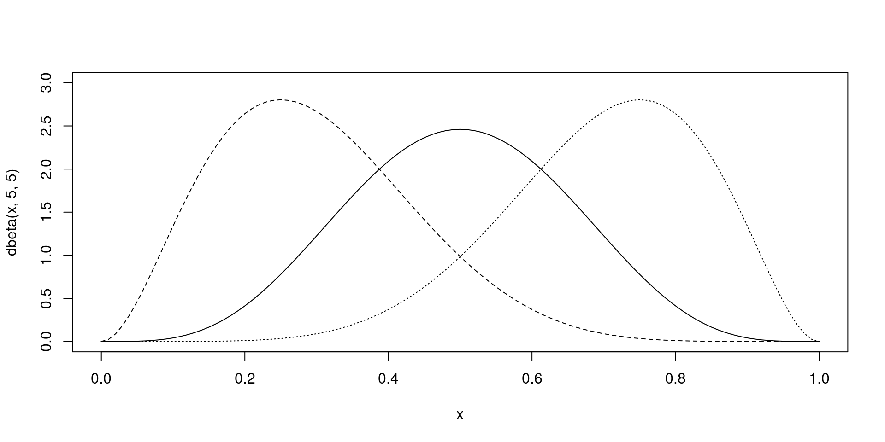
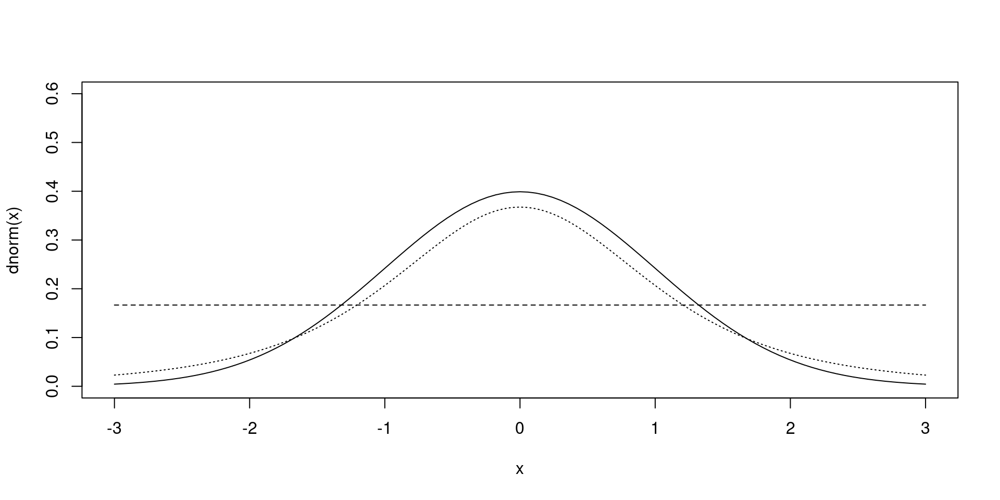

[1] 1 2 3 4 5[1] 15EDF 5401: Generalized Linear Models
Russell Almond
Questions welcome during lectures (speak up if on Zoom)
Russell Almond
Russell Almond (thee, thou)
Questions welcome during lectures (speak up if on Zoom)

Cohen, J., Cohen, P., West, S. & Aiken, L. S. (2003). Applied multiple regression/correlation analysis for the behavioral sciences (3rd ed). Lawrence Erlbaum Associates, Inc. ISBN 9780203774441
This is called CCWA in the readings list.

Lewis-Beck, C. and Lewis-Beck, M. S. (1980). Applied regression: An introduction. Sage Publications. (ISBN e-book: 9781483381480, Paperback: 9781483381473)
Called LB in the reading lists.

O’Connell, A. A. (2006). Logistic regression models for ordinal response variables. Sage Publications. (ISBN e-book: 9781452210834, paperback: 9780761929895)
All of these books are available online.
Gelman, A., Hill, J. & Vehtari, A. (2020). Regression and Other Stories. Cambridge University Press. URL: https://avehtari.github.io/ROS-Examples/ (This text is used for EDF 5484.)
Navaro, DJ (2018). Learning Statistics with R: A tutorial for psychology students and other beginners. Version 0.6.1 URL: https://learningstatisticswithr-bookdown.netlify.app/
Wickham, H., Cetinkaya-Rundel, M., & Grolemund, G. (2023). R for Data Science. O’Reilly. ISBN 978-1492097402, URL: https://r4ds.hadley.nz
Leemis, L. M. (2023) Statistical Modeling: Regression, Survival Analysis, and Time Series AnalysisLinks to an external site., 2023, Lightning Source, ISBN: 978-0-9829174-3-5.
Andy Gelman’s Blog: https://andrewgelman.com
Will do most work through Posit Studio:
https://posit.cloud/spaces/404203/join?access_code=pvsD1nGmC6ryEb0Nzhy8hEyQiDgakCGsgYys_Mop
Free Student Account.
Other Tools:
The R software is available through CRAN (Comprehensive R Archive Network), https://cloud.r-project.org/.
R is a programming language and command line tool. Most people use the RStudio integrated development environment. This is also available for free at https://posit.co/products/open-source/rstudio/.
SPSS is rather expensive and is only available with time-limited licenses. SPSS is available on every computer in labs in College of Education. Students may also access to SPSS through FSU virtual lab. The FSU virtual lab can be accessed via: https://its.fsu.edu/service-catalog/end-point-computing/myfsuvlab
For help, search on YouTube “SPSS Regresssion”.
View lecture videos before class.
Ask questions in class or on discussion board
Will work on Case Studies in class.
Video Lectures in SPSS, will use R (through Posit Studio) in class.
Due dates are posted on Canvas.
When changes are necessary (usually extending deadline), these will be posted on canvas.
Participation activities can be completed up to the end of the class; but keeping up is helpful for me and you.
Homework late homework is accepted, however, if it is turned in after the answer key is posted on Canvas, the score will be reduced by 25%.
** Last Day for All Homework, Friday December 8, 2023.**
Exams are due on the day posted on Canvas. Students who are unable to complete the exam by the due date must contact the instructor to make arrangements before the due date, or they will receive no credit.
Dial: 644-5203
Email: ralmond@fsu.edu
👍 Speed Up
👎 Slow Down
🖐️ I have a question
People on Zoom, feel free to unmute and ask questions.
Post on Discussion Forum
Come to coffee hours & online reviews.
Let me know if you have problems reading material
Confusion is a part of learning
Post questions in class forums!
Come to Tea and Coffee Hours
Make an appointment
Be specific about what is confusing you
A statistic is an operator which summarizes a data set. This could be a numerical summary or a graphical summary.
Statistics is the study of statiscs.
Data (a plural noun) are a collection of observations about a collection of subjects.
Usually put into a spreadsheet (called data frame or tibble in R).
If the data set is \({\bf X}\), then the value of Variable \(j\) for Individual \(i\) is \(x_{i,j}\).
X[i,j] to extract values from a matrix, data frame, or tibble.[Matrixes are bold upper case, values in the matrix are lower case]
The vector \({\bf x}_i = (x_{i,1},\ldots,x_{i,J})\) is the set of all measurements on Individual \(i\). (Vectors are in bold face).
X[i,] to extract an observation vector.The response to an unstated individual on Variable \(j\) is written \(Y_j\) if it is a random variable, or \(y_j\) is if is the value of a random variable.
X[,j] or X$j.
\[ \sum_{i=1}^{N} x_i = \sum_i x_i = x_1 + x_2 + \cdots x_n\] This can be used sum a column (summation index \(i\)) or row (summation index \(j\))
In R, this is a for loop:
[1] 1 2 3 4 5[1] 15The sum() function in R does this implicitly. Thus sum(x) is faster, to both code and run. Many statistic functions in R work the same way, e.g., mean(), median(), sd().
NAs, missing data, which are contagious. So mean(x) is NA if any element of x is NA.mean(x,na.rm=TRUE) to get the mean of the non-missing cases.Using a matrix or a data frame, we usually are talking about row sums and column sums.
sum(X[i,]), rowSums(X), apply(X,1,sum)mean(X[i,]), rowMeans(X), apply(X,1,mean,na.rm=TRUE)sum(X[,j]), colSums(X), apply(X,2,sum)mean(X[,m]), colMeans(X), apply(X,2,mean,na.rm=TRUE)R only provides built-in rowXXX function for mean and sums, but the other two methods work with any function.
\(F(x) = \Pr(X \leq x)\)
Also write $ X F()$
Often a distribution has parameters (usually written as Greek letters).
A joint distribution is over two or more variables:
\(F(x,y) = \Pr(X \leq x \wedge Y \leq y)\), where \(\wedge\) means and.
\(\boldsymbol{X} \sim N(\boldsymbol{\mu},\Sigma)\) ## 4 Moments of a Distribution
mean(x)
median(x); trimmed mean mean(x,trim=0.05)var(X)
sd(X); Precision, \(\sigma^{-2}_X\)IQR(x); median absolute deviation (MAD), mad(x)DescTools::Skew()

DescTools::Kurt()

A sample is a subset of the individuals in a population.
Under certain conditions, sample statistic converges to population statistic as the size of the sample increases (Law of Large Numbers).
So if \(t({\bf X})\) is a statistic, write \(\hat t\) or \(\tilde t\) for estimate.
Types of Samples
Random Samples
Simple Random Sample – All individuals have an equal probability of being chosen
Stratified sample – Break population into groups (strata) and then do a SRS in each strata.
Cluster sample – Individuals come in clusters (e.g., students in a classroom). Randomly sample clusters, but take everybody in the cluster.
Sample weights – generally related ot the probability of being selected; used with more complex sampling methods.
Non-random Samples
Systematic Sample – Individuals chosen accoridng to some deterministic rule.
Convenience Sample – Pick readily available individuals
Quota samples – Pick the first \(n\) volunteers (often in strata)
Missing Data
Missing Completely at Random – complete cases are a SRS of all data.
Missing at Random – complete cases are a stratified sample of all data
Non-ignorable Missingness – need a more complex model for missingness.
A statistic \(T\) from a sample is a random variable. Let \(T^{*}\) be the value of the statistic in the population.
bias – a systematic error, \(E[T-T^{*}]\)
standard error – standard deviation of the statistic (if we could take the sample over and over again), \(s_{T} = \sqrt{\textrm{Var}(T)}\)
robustness/resistance – how sensitive the statistic is to outliers or other model assumptions
efficiency – how good a standard error can be achieve given the sample size.
Fundamental equation of statistics
\[ \textrm{Estimate} = \textrm{Estimand} + \textrm{bias} + \textrm{residual error} \]
The residual error had mean zero, and is characterized by its standard error.
Generally, the residual error is easier to deal with than bias.
A representative sample is one which will produce an unbiased estimate.
Mean Square Error includes both bias and random error.
\[ \textrm{MSE}(T) = \textrm{bias}(T)^2 + s^2_{T} \]
A model is a function we can use to make predictions.
\(Y\) is the dependent variable, the target of prediction.
\({\bf X}\) is a set of variables which will be used to predict \(Y\), independent variables.
Let \(f(x) = b_0 + b_1 x\)
\[E[Y|b_0,b_1] = b_0 + b_1 X\] This model is a line; \(b_0\) is the intercept and \(b_1\) is the slope. In general, \(f({\bf x}) = b_0 + b_1 x_1 + b_2 x_2 + \cdots\) is a linear predictor.
The fitted value or predicted value for \(Y_i\) is \(f({\bf x}_i)\), often written \(\hat {Y_i}\) or \(\tilde {Y_i}\).
To get a full model, we need to express how \(Y\) might deviate from its prediction.
Simplest model is normally distributed errors
\[Y_i \sim N(f(\boldsymbol{X}_i),\sigma_e)\]
This can be rewritten \[ Y_i = f(\boldsymbol{X}_i) + \epsilon_i \qquad \epsilon_i \sim N(0,\sigma_e)\]
The difference between the prediction, \(f(\boldsymbol{X}_i)\) and \(Y_i\) is the residual, \(\epsilon_i\).
This is a linear model. The parameters are the coefficients (slopes and intercepts) plus the residual standard error.
Given a set of data \(\boldsymbol{Y}\) and \(\bf X\)
Prediction error is \(Y_i - \tilde{Y_i}\)
Can define a loss function, \(L(Y,f(\boldsymbol{X}|\boldsymbol{\beta}))\).
Least squares:
\[L(\boldsymbol{Y},f({\bf X},\boldsymbol{\beta})) = \sum_i (Y_i - f(\boldsymbol{X}_i|\boldsymbol{\beta})) ^2 \]
The values of \(\boldsymbol{\beta}\) which minimize the square error, are the least square estimate, \(\hat{\boldsymbol{\beta}}\).
In machine learning, this is called learning or training.
We want the training sample to be representative of the population of interest.
Predictions of new values inside the range of the training data are interpolation.
Predictions outside of the range are extrapolation.
Extrapolation has a big assumption; the data outside the training sample will behave like the data inside the sample.
If we think the variables in \({\bf X}\) influence \(Y\), then the prediction should be better by including those variables.
Can’t prove causality: - Can provide evidence for suspected causes - Can identify candidate causes for later testing
All models are wrong, but some are useful
– George Box [@box1976]
Models are an approximation of the truth, they always leave something out.
Often simplified version of the truth allows us to see certain relationships more clearly.